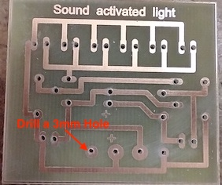

Sound Activated Light
Table of Contents
1 Introduction
Learn It
- After the kit is successfully produced, as the music or other sounds sound, the five LED lights follow the rhythm of the sound (the speed of the sound) and move. It can be placed near the sound, you can feel the beautiful melody combination of sound and light, let the light dance with music!
- The voice-activated LED melody lamp circuit is composed of a power supply circuit, a microphone amplifying circuit and an LED lighting indicating circuit. The power source is input by 9V battery, and the C1 filter is used for the circuit. The MIC1 (replaced with a potentionmeter as Circuit Wizard does not have a Mic) converts the sound signal into an electrical signal, which is coupled to Q2 by C2, and the amplified signal is sent to the base of Q2. The LED is illuminated by Q2. The louder the sound, the higher the brightness of the LED.
Design It
- Click here to download the Circuit Wizard file.
- The Circuit Principle
- You will now need to drill and then populate the PCB, ask your teacher for the PCB.
- Below is a picture of the Circuit Wizard PCB, you can also look at the Circuit Wizard file to get the values of you are unsure.
- Here is also a picture of the artwork, remember that this is what the board looks like from the component side, not the solder side.
Build It
- Ask your Teacher for a PCB, you will forst need to drill the holes for the PCB. Please ensure you follow the safety rules, if you are unsure, ask your teacher.

- Below are images and labels of the components you will need. Don't forget to include a battery snap.
- Please note the mocrophone has a positive and negative wire. See below.
- Carefully place the components into the PCB and solder them in place.
Badge It
- Once you have completed the sound activated light project, show your it to your teacher.
- These marks will be added to your current project.